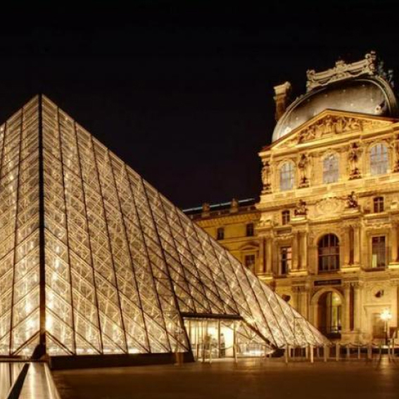

Maxim Zmeyok
JavaScript Developer
Contacts
- Address: Gomel, Belarus
- Phone: +375292373818
- Email: maxim_zmeyok@mail.ru
Skills
- HTML / CSS
- SASS / SCSS / LESS
- JavaScript
- React
- Git
- English (A2 - Pre-Intermediate)
Education
University
- Belarussian State University of Transport (Bacleor of Architecture, 2013-2019)
Cources
- Rolling Scope School (JS/FE 2021Q3)
- Udemy (JavaScript 2021 by Vladilen Minin, 2021)
Experience
Example of code
Task (Codewars):
If we list all the natural numbers below 10 that are multiples of 3 or 5, we get 3, 5, 6 and 9. The sum of these multiples is 23. Finish the solution so that it returns the sum of all the multiples of 3 or 5 below the number passed in. Additionally, if the number is negative, return 0 (for languages that do have them). Note: If the number is a multiple of both 3 and 5, only count it once.
Solution:
function solution(number) {
if (number < 0) {
return 0
} else {
let arr = []
for (let i = 0; i < number; i++) {
if (i % 3 == 0 || i % 5 == 0) {
arr.push(i)
}
}
return arr.reduce((sum, current) => sum + current, 0)
}
}Projects
Codewars:
Solutions of tasks (JavaScript).
Museum:
Website of Louvre Museum (HTML / CSS / SASS).
Wildlife:
Website of helping planet and wildlife (HTML / CSS / SASS).
About
The main aim of my life is mental and physical development. I’m always ready to take lots of responsibilities, to change myself and to learn new things. I’m very friendly and positive person. I don’t have bad habits and I’ve already served in army.